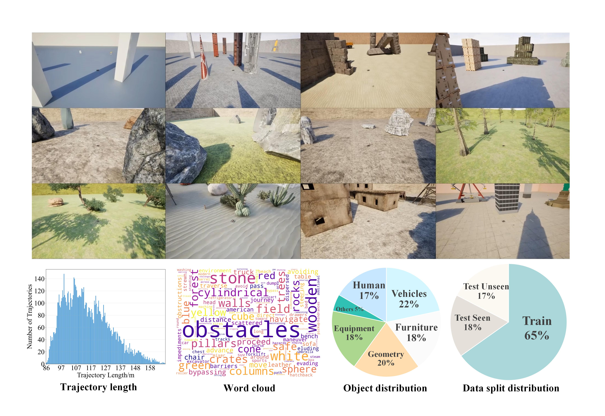
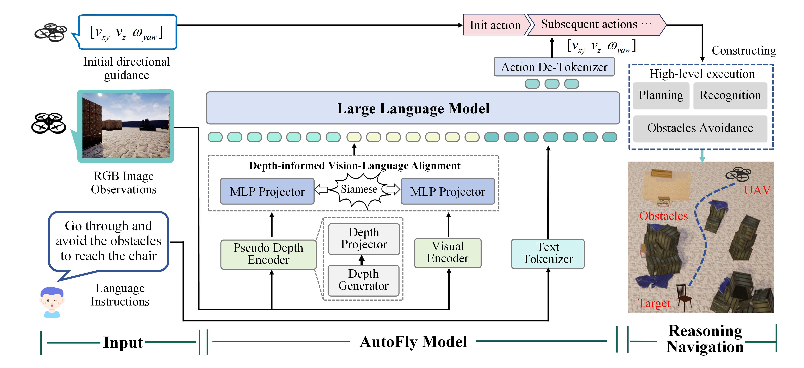
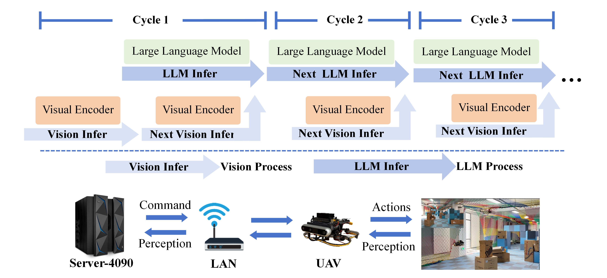

Abstract
Vision-language navigation (VLN) requires intelligent agents to navigate environments by interpreting linguistic instructions alongside visual observations, serving as a cornerstone task in Embodied AI. Current VLN research for unmanned aerial vehicles (UAVs) relies on detailed, pre-specified instructions to guide the UAV along predetermined routes. However, real-world outdoor exploration typically occurs in unknown environments where detailed navigation instructions are unavailable. Instead, only coarse-grained positional or directional guidance can be provided, requiring UAVs to autonomously navigate through continuous planning and obstacle avoidance. To bridge this gap, we propose AutoFly, an end-to-end Vision-Language-Action (VLA) model for autonomous UAV navigation. AutoFly incorporates a pseudo-depth encoder that derives depth-aware features from RGB inputs to enhance spatial reasoning, coupled with a progressive two-stage training strategy that effectively aligns visual, depth, and linguistic representations with action policies. Moreover, existing VLN datasets have fundamental limitations for real-world autonomous navigation, stemming from their heavy reliance on explicit instruction-following over autonomous decision-making and insufficient real-world data. To address these issues, we construct a novel autonomous navigation dataset that shifts the paradigm from instruction-following to autonomous behavior modeling through: (1) trajectory collection emphasizing continuous obstacle avoidance, autonomous planning, and recognition workflows; (2) comprehensive real-world data integration. Experimental results demonstrate that AutoFly achieves a 3.9% higher success rate compared to state-of-the-art VLA baselines, with consistent performance across simulated and real environments.
Video Presentation
We have constructed a complete VLA model-based pipeline for UAV autonomous navigation, which encompasses the entire workflow of dataset collection, supervised fine-tuning of the VLA model, model acceleration, and physical UAV deployment, and have conducted flight tests across a variety of simulated and real-world scenarios.
Autonomous Navigation Dataset
We construct 12 diverse simulated environments using AirSim for training and evaluation, totaling over 13K episodes and 2.5M image-language-action triplets. For object recognition tasks, we strategically position 60 carefully selected object instances at environment boundaries, with each scenario containing 3-5 distractor objects to challenge the model's recognition and reasoning capabilities.
VLA Model for Autonomous Navigation
Framework of AutoFly. AutoFly takes RGB observations and linguistic instructions as inputs and directly outputs high-level actions. These actions, combined with initial actions derived from coarse-grained positional or directional information, form action sequences.
Model Acceleration and Deployment
Our model is implemented on a remote server and communicates with the robot via a local area network (LAN). Our system employs a multi-process parallel inference methodology.
Performance Visualization of AutoFly
Real Indoor Structured Environment.
Real Outdoor Unstructured Environment.
Cluttered Cylinder Scene.
Dynamic and Cluttered Cylinder Scene.
Dense Forest Scene.
Dense Stone Scene.
Cluttered Town Scene.
Cluttered Town Scene with Target Distractors.
Obstacle Avoidance Task Only.
Recognition Task Only.
BibTeX
@article{YourPaperKey2024,
title={Your Paper Title Here},
author={First Author and Second Author and Third Author},
journal={Conference/Journal Name},
year={2024},
url={https://your-domain.com/your-project-page}
}